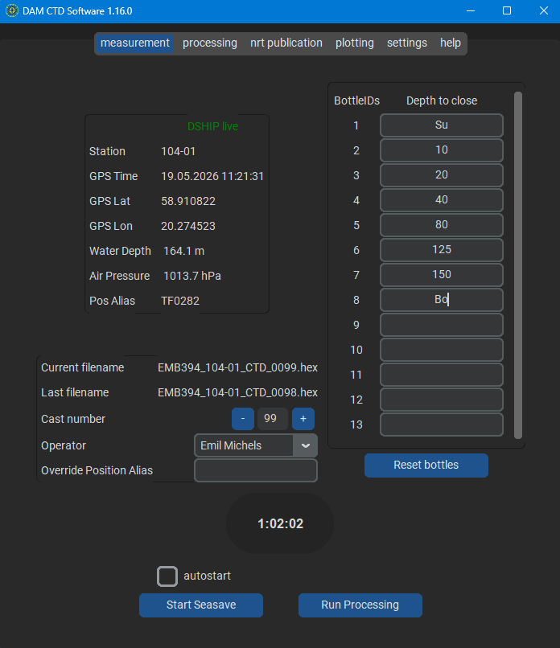
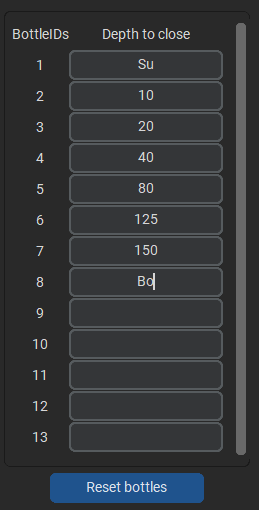
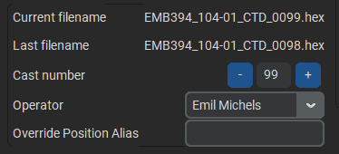
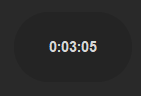
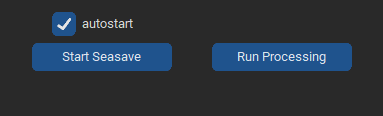
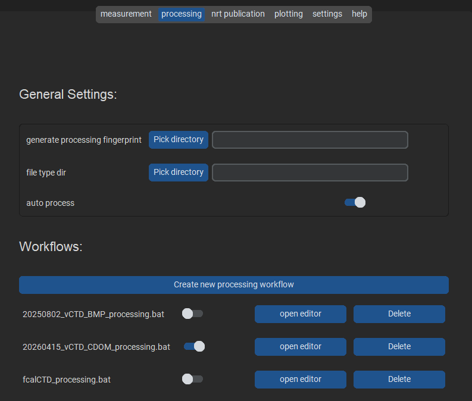
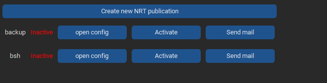
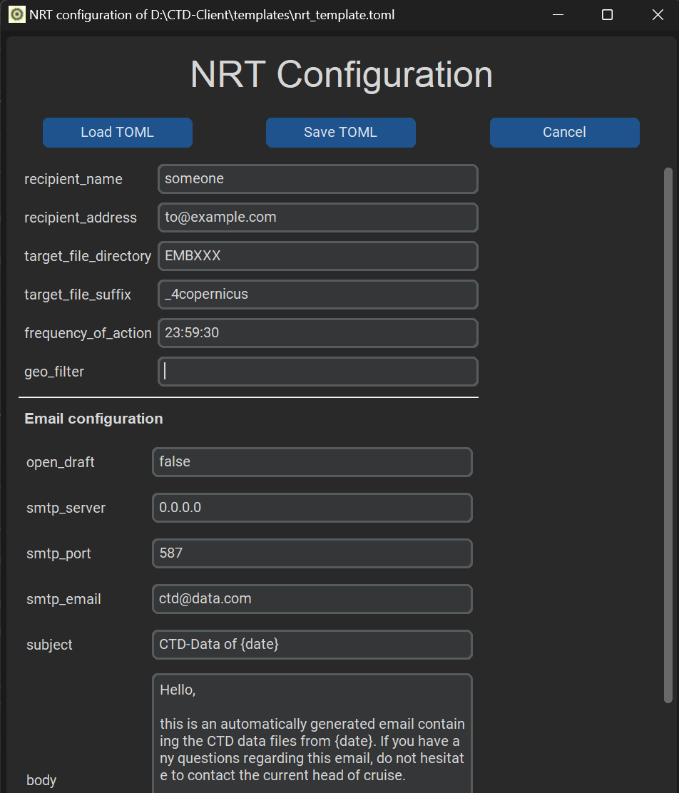

CTD-Client¶


Intro¶
The CTD-Client is a program that supports the measurement of CTD-data with Sea-Bird CTDs. Calls Sea-Birds measuring software, Seasave, with certain parameters and alters its configuration file prior to measurements. This way, a variety of functions can be achieved:
primarily tags data files with metadata from the ship information system available on german research vessels (DSHIP)
allows for programmed bottle closing time configuration
can run processing scripts using Sea-Bird processing modules and custom ones, via the ctdam python package.
supports Near-Real-Time distribution of CTD data via email
saves relevant usage data for continuous operation
Basic feature description¶
Metadata injection¶
Using DSHIP, or a comparable ship information system whose data can be retrieved via simple TCP/IP-calls, all kinds of ship metadata can be saved to the Sea-Bird custom header. This way, all data files, from raw .hex data, to .btl or .cnv data files will feature the metadata information. Additionally, other metadata, like a continuous bottle number for a whole cruise, can be put into the metadata header. The file name of the data file will also be build from different pieces of metadata.
Programmable bottle closing¶
If the automatic firing of water bottles is wanted, for example when using free-flow bottles, those can be programmed inside the CTD-Client. The software can also adjust for hardware-specific time delays between firing individual bottles.
Processing¶
Processing raw data after measurements is also supported. The different processing steps to run can be configured in a separate tab, while the execution will be a single bottom press on the main page. That way, the data can be easily processed in seconds after a successful measurement. The configuration window does also feature a very intuitive alteration of processing workflows, allowing for quick and constant playing around with the data.
Near-Real-Time data distribution¶
All acquired data can automatically send to different stakeholders or other interested parties. The distribution protocol is email and can be set to sending daily to a specific time or after each processing workflow.
Usage¶

CTD-Client uses tabs to display different pieces of information to the user. Simply clicking on one entry will let you switch to that tab.
How to measure¶
Important
The CTD-Client comes with sensible defaults, but some things need to be configured before using it first time. So have a look at the configuration info to set up for measurement.
For measurements you can safely stay inside of the tab of the same name. Here, you can see different areas to interact with:
DSHIP information¶
This panel displays selected DSHIP parameters that can be chosen inside of the configuration tabs. You cannot interact with these values in any way, they are solely meant for information. Internally, these values are used for the metadata header and the file name.
Water bottles¶

Here, you can see the number of water bottles that are set up and can assign depth values to them. After starting a measurement, these values are used for automatic bottle firing. You can insert any value you want, but only positive numbers will be used as bottle closing depths. All other values will be an internal signal to Seasave, that the CTD Operator plans on closing this bottle. This information will result in Seasave offering this bottle as next to fire, if it is the lowest one, seen in cronological order, after all automatic bottles have been fired. Setting a non numerical value to a bottle can therefore be used as a reminder for the operator to close this bottle manually under a certain condition. When arranging the Seasave window(s) and the CTD-Client, one can also keep an eye on any pieces of information that has been entered here previous to measurement.
Data file and metadata information¶

Shows the currently generated file name, the last file name written and allows selection of operator, which will be used as metadata point inside the .hex header. Additionally allows to manipulate the ‘Cast’ number, a basic counter of all the individual CTD casts conducted during a cruise. The Pos_Alias can also be overwritten, if the value retrieved from DSHIP or another ship data provider does not work for this cast or is not wanted.
Stopwatch¶

Basic stopwatch that can only be set back to zero upon clicking on the watch widget. Will count up until infinity. Can be used to track all kinds of CTD cast specific waiting times. We use it mostly to ensure a constant soaking time before each cast.
Measurement and Processing start/stop bottoms¶

Allows to start a measurement (calling Seasave) or a processing (see below). After starting either one of these, the respective button changes to a ‘cancel’ button. When clicking this, the corresponding process will be killed immediately.
How to process¶
Processing a .hex or .cnv file can be done by clicking ‘Run Processing’ on the measurement tab. This opens a file selector where the target file to process can be selected. The selected file will be used as input for all scripts and/or processing workflows selected in the processing tab. These workflows basically allow the user to easily build a series of processing steps that are meant to be run on the target data file. In-depth description of processing workflows can be found in the documentation of the ctdam python package.
Available processing modules are the standard Sea-Bird ones (which need to be installed on your machine), custom ones from the growing collection inside ctdam and all TEOS-10 functions, through the gsw python package.
Important
Orchestrating all these modules with their diverse background is quite complex, if one aims for a drag-and-drop behavior. So be forgiving if some combinations need some more tinkering. You can also file a bug, if things go really wrong.
You can customize workflows in the ‘Processing’ Tab. Here, a list of the available workflow files and other scripts can be seen.
Note
For other custom processing scripts to appear here, they need to be put into the configuration directory

They can be turned on and off by a switch, which means that they are going to run upon clicking ‘Run Processing’. Note that all activated workflows will run sequentially, sorted by alphabet, as in the ‘processing’ tab. To edit the individual files, click ‘edit/details’. That will open a new window with the respective files configuration:

How to use Near-Real-Time Publications¶
A Near-Real-Time Publication (NRT), in the context of this software, is any kind of distribution of data. There are to ways of distribution available: simple copying to a target location and the sending of emails, with the data files attached. The other important distinguishing factor for a NRT is the trigger, when to distribute the data files. At the moment, there are two kinds of triggers: one that waits for a processing routine to finish, and one that runs daily at a certain time. The first variant sends only the just processed file, while the other one filters a target data file directory for files that are from the same day. Both variants additionally allow a geographical filter, that checks the candidate files coordinates against a polygon of coordinates, that must be given in any form that geopandas can handle. All the configuration options for a single NRT are saved in a .toml file. A template can be obtained from inside the software. A configuration file needs to be prefixed with “nrt_” and have the .toml extension. More details concerning configuration can be found here.
Usage¶

To configure and use NRTs you need to open the ‘nrt publication’ tab. Here, all the necessary information is displayed for each individual nrt. For each entry, three buttons are provided, that allow the configuration, activation/deactivation and the direct publication of new data, according to the settings that have been configured.
To create a new NRT, click on the ‘create new NRT publication’ button. This opens a new window that allows to enter the necessary information. It will be pre-filled with template information.
NRT Configurator¶

Short description of the individual field values and their uses:
recipient_name: plain desriptor for the overview table
recipient_address: either a target path for copying or a list of email addresses, comma-separated
target_file_directory: the directory to scan for new files to publish
target_file_suffix: a file descriptor that can occur anywhere in the files that are meant to be published
frequency_of_action: either “each_processing” for NRT publications after each successful processing, or a time point in “HH:MM:SS” format
geo_filter: a path to a file that contains polygon coordinates in a geopandas-compatible format, eg. .shp
open_draft: whether to open the email message as a draft inside an email client instead of directly sending the email blindly
smtp_server: the email server to use for sending
smtp_port: the port to use for sending
smtp_email: the email address to send from
subject: the email messages subject
body: the text of the email message. Does take a placeholder {date} that will be substituted by a timestamp
Important
When creating a new NRT that is going to send emails, make sure to test the email settings by setting the ‘open_draft’ option to true. That way, instead of sending the emails directly, the draft will be opened in the system email program, to allow reviewing its contents prior to sending.
Context¶
This software is developed at the Leibniz-Institute for Baltic Sea Research, Germany (IOW) for the German Marine Research Alliance (DAM) in the context of the Underway Research Data Project. It is therefore primarily targeted for use on German research vessels, which are all using the DHSIP-information managing system. Feel free to reach out, if you think we should generalize to other forms of ship information systems.